When people talk about street photography, the definition does not really matter. A random photo you take in the street can be street photography. What matters is the way you see the world. As Elliot Erwitt said: photography is the art of observation.
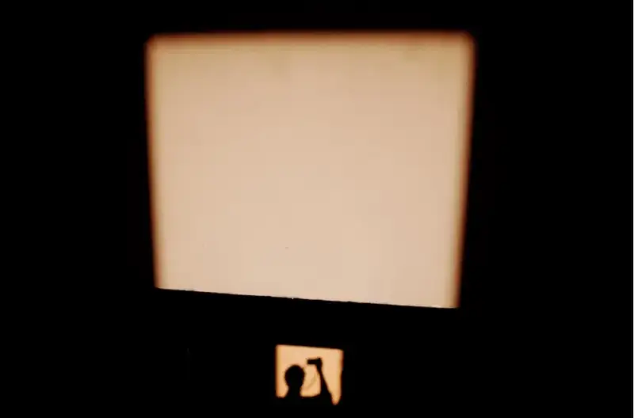
Shadow selfie, small box. Uji, 2018，©Eric Kim
Before you shoot
1. Create a theme or a series for your street photography, to build a style of your own.
2. No theme means mediocrity.
3. Keep the camera in a small bag you carry, so you can pull it out at any time.
4. The camera you have at hand is the best street camera.
5. Take the camera with you wherever you go.
6. Carry a spare battery and memory card. This habit has saved me from trouble many times.
©Melissa Oshaughnessy
7. Street photography has no rules.
8. Do not just take photos. Tell a story.
9. I think a good photo has energy, makes people think, and resonates with the viewer.
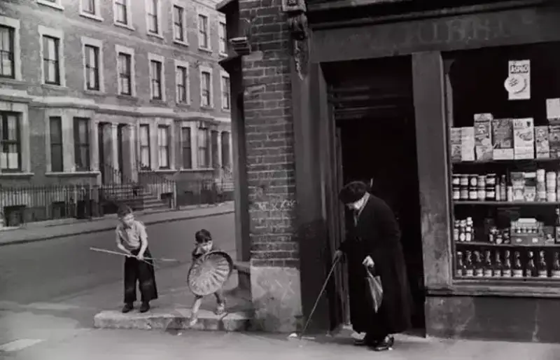
1954 London, England, (c) Marc Riboud
10. Composition matters, but content matters more.
11. Everyone in the street has a story to tell.
12. Your imagination is the stage, and everyone in the street is your actor.
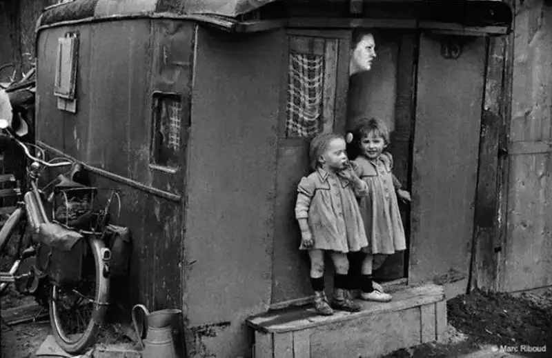
1953 Paris, France, (c) Marc Riboud
While you shoot
13. Smile often.
14. Be easy and relaxed when you talk to your subject.
15. Pretend you are shooting something else.
16. Respect.
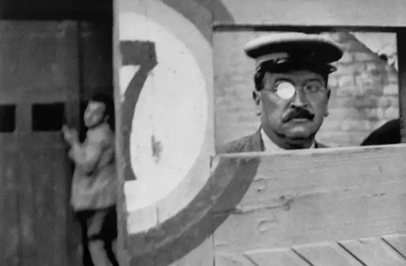
(c) Cartier-Bresson
17. Try not to shoot homeless people (it can hurt their dignity).
18. In my four years of street photography, only two people told me not to shoot. (Eric Kim)
19. Most people like being photographed.
20. Do not fear offending people. Most of the time it will not happen.
21. Most people are usually friendly.
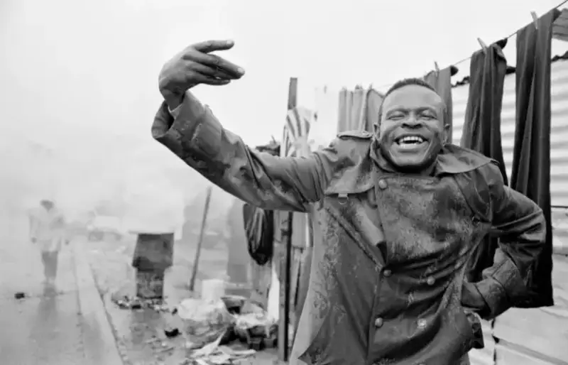
©Ian Berry
22. The quieter your camera, the better.
23. Do not be sneaky.
24. Children do not notice your camera.
25. If you shoot a person in the street, ask for their email, so you can send them the photo. They will like it.
(c) Cartier-Bresson
26. Observe the street openly.
27. Look for elements with impact.
28. You can also find beauty in the ordinary.
29. Take more photos that make people smile.
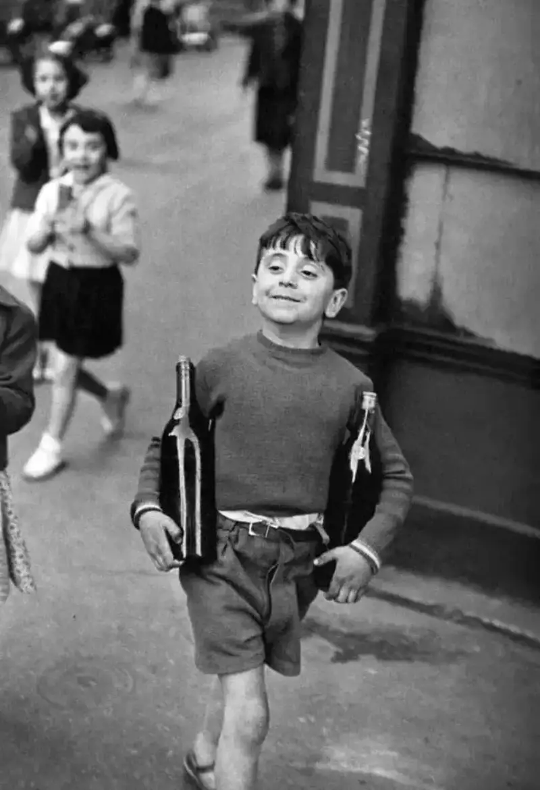
(c) Cartier-Bresson
30. Keep experimenting and trying new things.
31. Look for the light.
32. Walk the roads you have walked before.
33. Watch what others have not noticed.
34. The subway and the bus are a gold mine for street photography. Think about how to mine them.
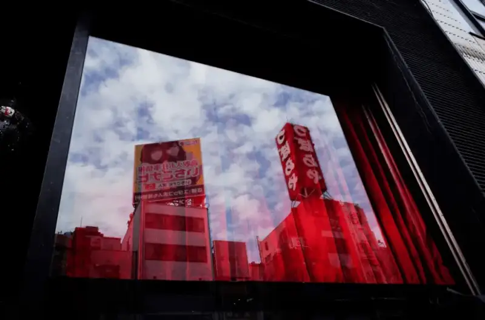
Red and blue osaka reflection. | ©Eric Kim
35. Do not fear raising the ISO.
36. On a sunny day, ideal exposure: F16, ISO 400, 1/320s
37. Try different lenses to spark inspiration.
38. In street photography, a wide lens beats a telephoto.
39. Color and black-and-white express different things. It is up to personal taste.
40. A great color photo may be ordinary in black-and-white, and a great black-and-white photo may look messy in color.
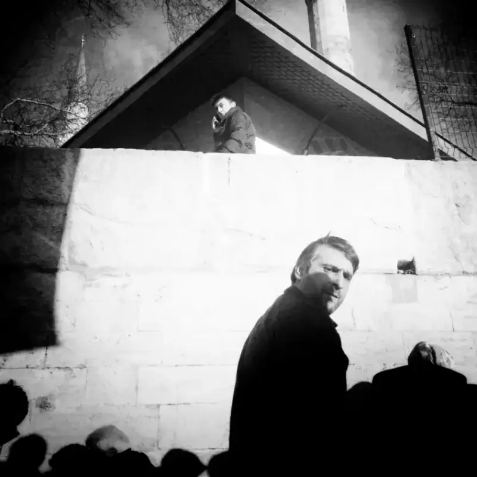
©Sevil Alkan
41. Learn to shoot from the hip, without the viewfinder, so shooting becomes instinct. Practice makes perfect. The depth-of-field scale on Leica M lenses is worth studying. Once you know the rules and build a sense of distance, hip shooting is very effective.
42. Practice shooting at waist level.
43. Compare shots from many angles.
44. Do not forget to look up and down.
45. Try squatting down when you shoot. It may give unexpected results.
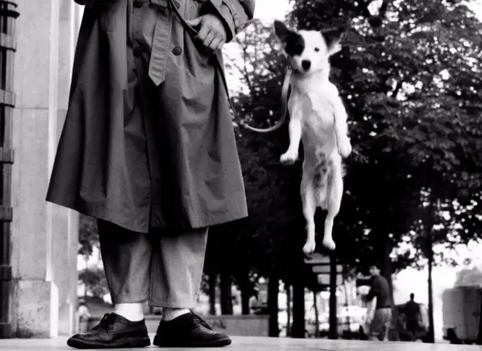
©Elliott Erwitt
46. Closer. Even closer.
47. If your photos are not good enough, you are not close enough. This is the truth.
48. I think most people are not close enough most of the time.
49. In fact, compared with war photography, street photography is not dangerous at all.
©Bruce Gilden
50. Do not hesitate when you press the shutter.
51. The more you hesitate, the more you miss the decisive moment.
52. Keep your eyes open, and be ready for the decisive moment.
53. Street photography often comes down to one line: I could have taken that photo, but I did not.
54. You will never see the same scene twice. Know and accept this.
55. Do not keep thinking about the great shot you may have missed. Just work harder for a better one.
56. Street photography is like fishing. Sometimes you catch a basket, and sometimes you catch nothing.
Garden Grove, 2016 #cindyproject | ©Eric Kim
After you shoot
57. Do not delete your photos easily. A blurry or mis-exposed photo may turn out to be a good one.
58. Spend 99 percent of your time picking your best work, and 1 percent on post processing.
59. Be ruthless when you select photos.
60. Back up photos in at least two places. Technology is not reliable. Cry if the hard drive fails.
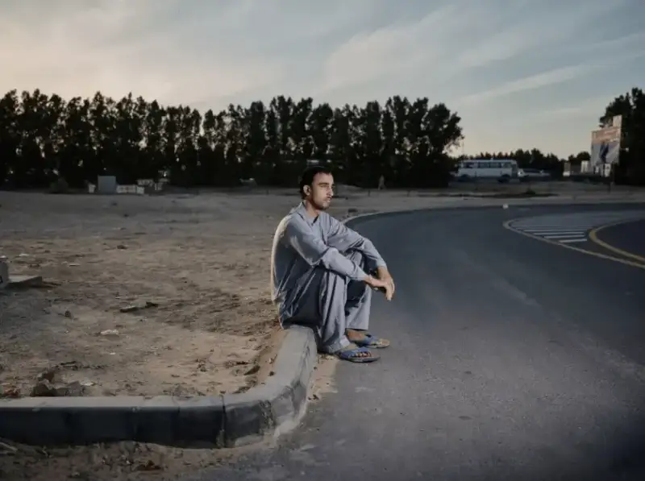
(c) Polly Tootal (UK)
61. There is no such thing as a perfect photo.
62. Do not look at too many street photos online. The more you look, the less of your own view you have.
63. Draw inspiration from other photos, but do not copy them.
64. Shoot for yourself, and do not care too much what others think.
65. Some people may think it is weird that you shoot in the street. Ignore them.
66. Useful advice and criticism online will help you a lot. So share your work. Everyone grew up from a beginner.
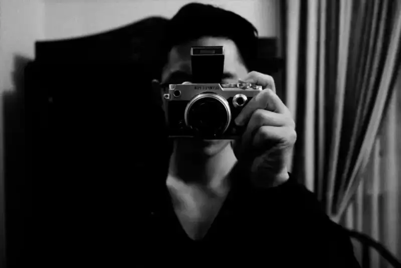
Eric Kim | ©Eric Kim
67. If you are new, do not worry too much about camera settings. Just set it to auto and shoot.
68. Do not fear shooting in public. You will get used to it.
69. Street photography is like swimming. You learn only by getting into the water. Practice is the only test.
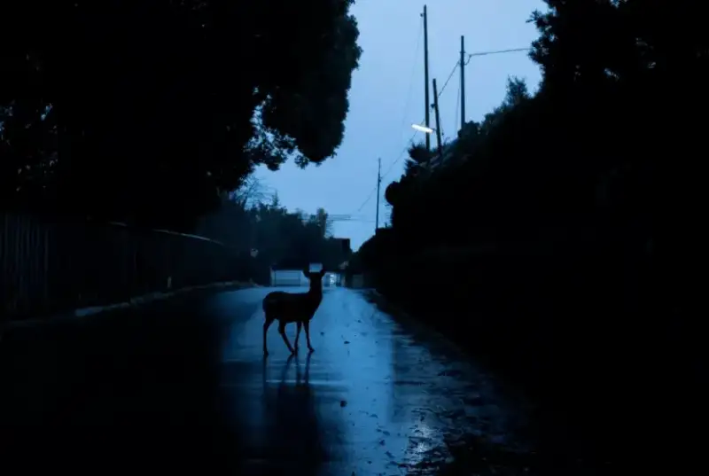
(c) Yoko Ishii (Japan)
70. After all, the chance of taking a good photo is very low.
71. The longer you stay in the street with a camera, the more likely you are to take a good photo.
72. The more you shoot, the more likely you are to catch the decisive moment.
73. Taking one or two frames each day is a good habit.
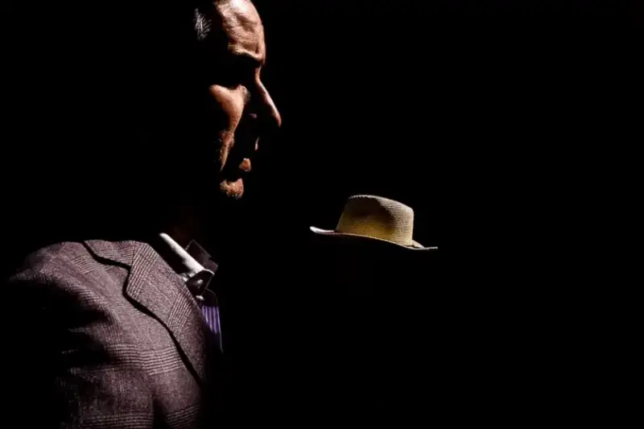
(c) Celine Pannetier (Spain)
74. Keep a record of your shooting, and of how your ideas develop and change.
75. Lose yourself in photography and forget the time.
76. You do not need to shoot on the boulevards of Paris. Your own backyard is just as good.
77. There is always a chance for a good photo, wherever you are.
78. The most exciting part of street photography is that you never know what you will see in the next second.
79. Again: think before you shoot.
80. Do not make excuses. Just go take photos.